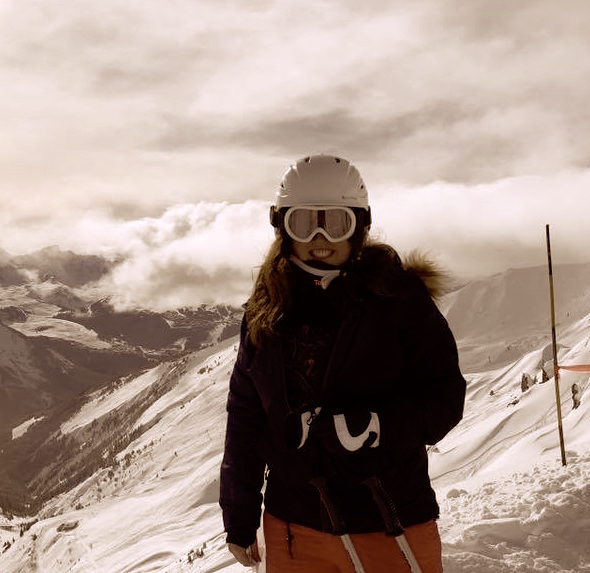

Our Story
The story behind The Altitude Bakery is a simple tale of 3 keen skiers who all ended up as friends and passionate bakers after living and working in Zermatt Switzerland for several winter seasons. Zermatt is considered one of the most beautiful ski resorts in the world and is famous for the Matterhorn Mountain which serves as a striking backdrop to the charming mountain village. Altitude Bakery Zermatt has long been considered the preeminent bakery in the Alps supplying all of the top hotels and restaurants ensuring skiers from all over the world wake up to delicious fresh bread in the morning, enjoy cakes and sweet loaves for their afternoon teas when returning from the slopes, and of course are able to enjoy Switzerland’s famous traditional cheese fondue in style in the evenings. The original owner Heinrich Marmez considered the 3 UK founders like family after several years of their dedicated service. He identified their talent for baking and agreed to fund the expansion of the famous bakery in London taking them on as equal partners in any British ventures. The first location opened on Pall Mall in autumn 2018 and a second much larger site is due to open in Bermondsey Street in winter 2020 that will enable them to keep up with demand as they are currently selling out of all stock by midday each day but don’t have the capacity to bake anymore!
Daria
Daria is originally from delightful Prague in the Czech Republic! She comes from a long line of famous bakers and won Czech Republic Master Bake-off in 2015 (their baking equivalent of the Great British Bake-off). She has her own baking YouTube channel with over 30,000 followers. She likes to ski, bake, and go to music festivals. Her favourite breads are the healthy ones! She does gluten free, sugar free, paleo and a whole range of the famous German style breads that are delicious and filling – perfect for fondue. Her favourite loaf is Fünfkornbrot which in English is ‘5 seed bread’ and she was taught this by her beloved grandfather. This one is popular with all ages so again be early so you don’t miss out.
Sophie
Sophie is originally from England but has travelled, skied, and baked all over the world when her gap year turned into 5. Upon her return to London she working in banking but after several years working 80 hour weeks she hankered to return to the mountains and packed up and moved to Zermatt after falling in love with a Swiss Ski Instructor called Claus! Sophie’s favourite loaf is ‘the San Francisco Sour Dough’ where she learned to make this delicious but difficult bread working for the famous Aspen baker Harold Ekman. She likes to ski, bake, go camping in the lovely English countryside and enjoys a sleep in when she doesn’t have to get up at 3am to bake!
Sarah

Sarah is originally from beautiful New Zealand and also considers herself a Londoner after 10 years in the capital. She is a keen foodie, baker and skier and has spent over 6 seasons in the Alps skiing and baking. She has a sweet tooth and her favourite loaf to bake is ‘Banana Bread’ which she highly recommends although you’ll have to be quick as it is usually the first sweet loaf to sell out with a dedicated Australian customer base (Banana Bread is almost a national dish for Australians). She learned to make this speciality one summer in Melbourne at the city’s busiest bakery Pandoro at St Kilda beach which is famous for its cake shops - come in and try for yourself!